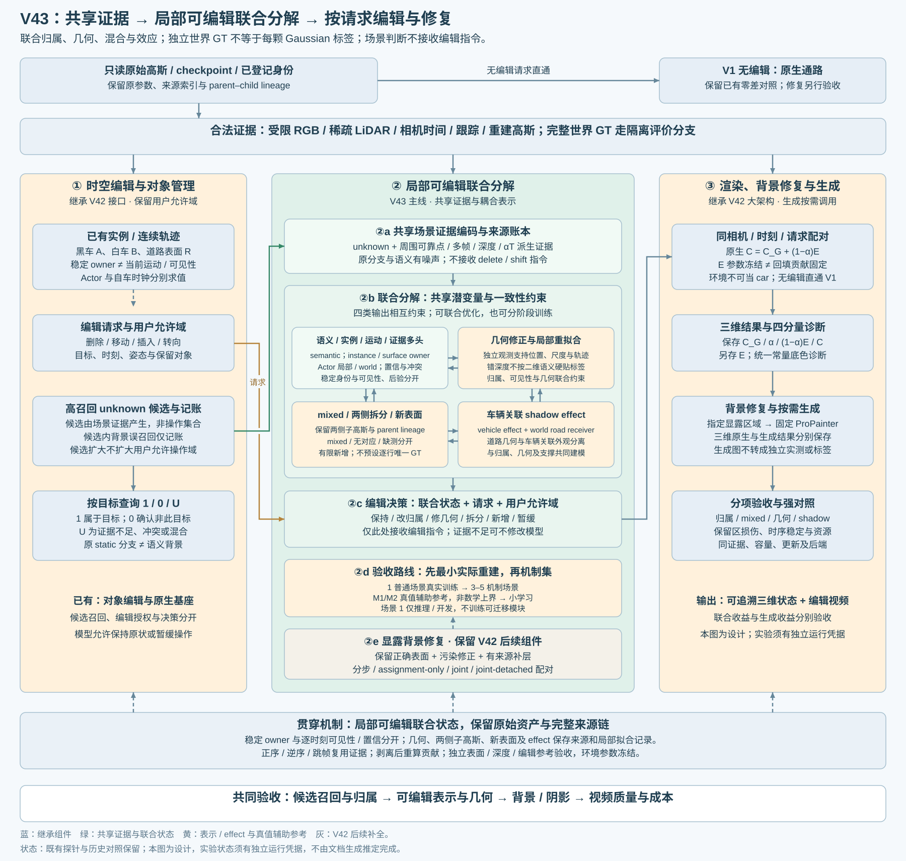
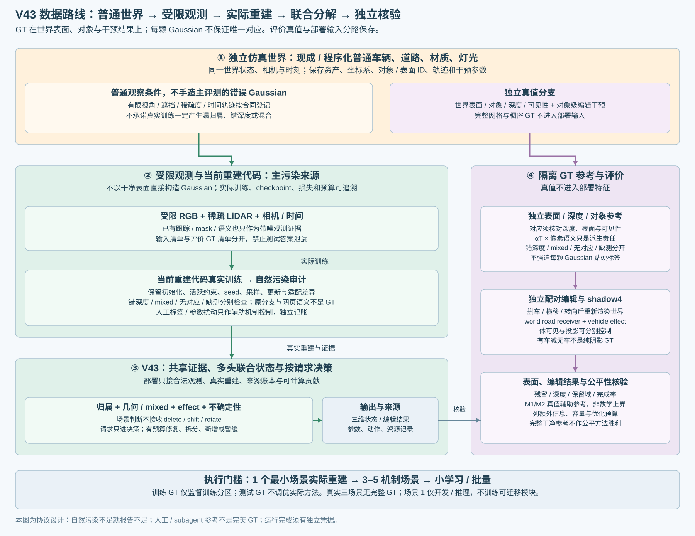

GT定义在独立仿真世界的表面、对象与编辑干预结果，不预设每颗Gaussian有唯一标签。保留共享证据、多头联合输出、分阶段训练，以及V1原生直出和V42大框／内部组件。
该文档生成器未运行训练或场景渲染。先完成1个最小普通场景的实际重建，检查自然污染，再扩3–5机制场景、小规模学习或批量造数；不承诺重建必然出现指定错误。
完整设计与实验合同 · 主架构SVG · 主架构PNG · 数据与GT隔离SVG · 数据与GT隔离PNG · 表示合同 · 待执行矩阵
| 量／状态 | 定义与边界 |
|---|---|
| 世界／对象／干预GT | 独立表面、对象、深度、可见性，以及对象删除／横移／转向后的重新渲染结果 |
| 原分支、网页语义 | 带噪证据；static／dynamic和颜色均不能当正确归属 |
| alpha×T × 像素语义 | 指定相机／时刻／可见状态及对应有效域内的派生责任，不是Gaussian GT或身份概率 |
| 错深度／mixed／无对应／缺测 | 分别记录几何冲突、多支持、no_correspondence、missing_observation，不按二维重叠强行硬标签 |
对应须核对独立表面、深度和可见性；投影跨类不足以证明三维mixed。模型自身预测、删点图、after暗像素和生成图不能循环成为GT。真实三场景没有完整GT，人工／subagent只提供带范围和分歧的证据参考；人工verdict保持空。
| 联合输出 | 用途与边界 |
|---|---|
| 语义／实例或表面／运动／证据 | 稳定身份与当前可见性分开；场景判断不接收delete／shift／rotate指令 |
| 派生混合责任、几何可靠性与修正 | 改归属、修几何、保留两侧拆分、有限新增或暂缓共同建模 |
| 车辆关联效应 | world道路receiver与vehicle effect owner分开；道路几何不随车移动 |
| 不确定性／补证据 | 认知后验、混合责任、当前可见性独立；未校准score不称概率 |
unknown候选不等于操作集合。既有允许域内优先召回，正常背景候选只记录误召回／成本；真正操作再核验保留域。相同观察更换请求时身份保持，动作可以不同。训练参考只在训练分区作为监督，不混入部署特征；验证／测试GT只进隔离诊断和评价。
四个强消融保持：特征阈值／仅概率决策／仅表示修复／两者联合；B3内比较顺序冻结、联合梯度、跨头stop-gradient。匹配候选和编辑覆盖，暂缓目标不移出残留分母。

现成／程序化普通车、道路和灯光，沿受限轨迹生成RGB与稀疏LiDAR，输入当前重建代码真实训练；保留初始化、活跃损失、预算、seed、checkpoint与接口适配。实际产生的污染进入V43，独立表面／深度／编辑参考负责核验。完整网格／稠密深度／测试编辑答案不进入部署输入。
先1个最小场景检查接口和实际污染，再3–5机制集，随后小学习／批量。未出现指定错误时如实报告，不改写为覆盖成功。人工标签遮挡、错归属／错深度或可追溯混合仅作辅助控制，不能替代自然污染证据。
配对编辑由独立世界干预后重渲染，不由待测高斯删点生成。阴影为world road receiver + vehicle effect owner；shadow4需独立控制车体可见与车辆投影。有车减无车只能先称对象移除总影响，不能直接当纯阴影GT，须排除遮挡、反射、间接光等混入。
| 实验 | 信息与预算合同 |
|---|---|
| M0 最小实际重建／接口 | 普通场景＋受限观测＋当前训练代码；独立核验表面、深度、编辑、effect与实际污染 |
| M1 真值辅助归属参考 | 固定真实重建表示，读取额外世界／深度／实例参考；mixed、错深度、无对应和缺测单列 |
| M2 真值辅助表示修复参考 | 声明额外几何／材料、容量、新增与优化预算；分别修几何、双侧拆分、effect及组合 |
| M3 候选范围 | 固定目标全集、总请求与模型，加入可确认正常背景，报告成本和编辑损伤 |
| M4 小规模联合学习 | 机制与隔离成立后才学习，独立场景冻结测试；不先批量造分类数据 |
M1/M2不是数学上界。真值辅助与完整干净表面参考分栏，逐项列额外信息、可观测域、视角、容量、更新、时间与显存；有限优化不保证优于实际方法，完整参考不能冒充公平方法胜利。测试真值不用于实际方法选参或调优。
开发／训练／校准／测试按物理场景、车辆供体、道路／灯光、轨迹和扰动祖先隔离。场景1仅开发诊断和迁移推理，不训练新的共享编码／判断／修复／effect模块。连续状态优化另报test-time adaptation；真实三场景无完整GT，场景1也不是整个方法的未见测试。
C = CG + (1−α)E。Actor路径无天空门控；Actor10K冻结原环境和静态。部分黑带来自环境回填，训练成因尚未证明。
| 同相机／时刻／请求 | 基线高斯 | 待测分解后高斯 |
|---|---|---|
| 原环境E冻结 | 原生最终RGB | 完整系统收益／残留 |
| 统一线性白底，仅诊断 | 原始覆盖／空洞 | 分解残影／几何／背景误改 |
每格存浮点CG、α、回填、最终RGB，另存E／B与裁剪显示。环境参数冻结不等于回填贡献冻结。白洞不是补好道路。当前不重训环境；如成为主要瓶颈，再做固定高斯、仅改环境的单因素对照。
M0：最小场景原生10K重建与独立编辑核验：16帧r2／r3适配，实际完成原生分支编辑基线与一个留出视角；新V43联合模块未训练，具体结论见独立运行报告。
M1/M2：选点规则与启发式修复首轮完成3锚点＋留出视角，仍有明显残影。M1未提供准确归属，M2未提供充分修复，因此尚未回答“归属准确时能改善多少”或“联合修复能否有效”。99.9%只是删前贡献覆盖；位置重心、统一尺度上限、继承父色和单帧200步外观拟合均是有限具体实现，不能据其失败否定研究方向。
继续追查：逐行来源与同世界观测证据控制记录删后新显露贡献、原16视图回放、稀疏测量与损失路径，并以同世界更充分观测重新重建。身份不确定与显露表面证据不足分别记录；范围内unknown不能直接等于car，GT颜色敏感性不作为部署算法。
R2限定白底、unknown白材质六组204帧、三锚点＋200步child refit均不修改。旧短探针未显示编辑分离改善，但不能否定联合学习或建立串行必经顺序。旧49帧／三锚点不冒充新机制集；人工verdict保持空。
独立表面／深度、删车／横移／转向、旧位残留、新位完整度、保留域损伤、效应和任务完成率共同核验。无完整GT的真实数据只报告证据范围，不报告完整真召回。设计状态不代表实验完成。
继承4D LangSplat语义／时间选择和TRASE实例编辑强基线；HUGS与EmerNeRF提供联合建模依据；Jev仅启发判断／执行分离。原方法和适配版本分别记录，这些依据不等于V43实验已成功。
TRASE已讨论概率对应和联合重建／分割，不能以“联合／概率化”本身主张创新。V43须在相近覆盖和明确预算下证明残影、误改与结构改善。
禁止自动AutoDL关机；完成或空闲均保留实例，只有用户明确要求才关机。覆盖旧自动关机约定。subagent仅6.1 sol或6.1 terra。小时级实验先做真实约10分钟smoke，覆盖保存、评价、完整恢复和下一阶段；该生成器不启动GPU任务或历史队列。